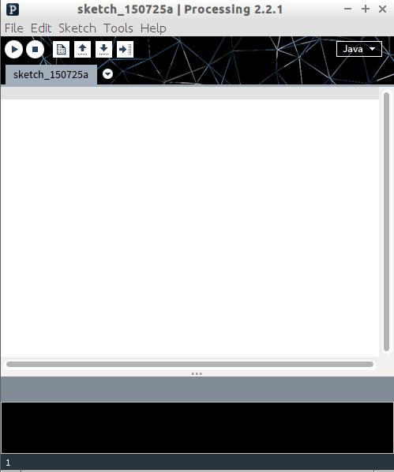
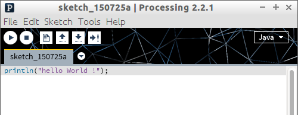
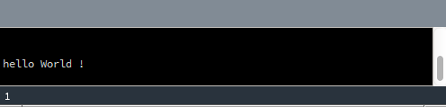
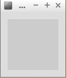

Avant de commencer réellement notre apprentissage de la programmation, nous allons devoir nous familiariser avec notre environnement de travail.
Si le logiciel n'est pas encore installé sur votre ordinateur, vous pouvez télécharger Processing sur le site officiel de Processing.
Lancez le logiciel, vous devriez voir apparaître ceci :

Traditionnellement, les "apprentis programmeurs" commencent leur "carrière" en écrivant un programme qui permet d'afficher à l'écran le message "Hello World !". Nous n'allons pas déroger à cette tradition. En Java (et Processing), il suffit d'une "instruction" pour afficher ce message (notez bien que selon le langage utilisé cela peut-être plus complexe) :
println("hello world !");
Recopiez cette instruction dans la fenêtre du logiciel et appuyer sur le bouton "Run" (bouton avec un triangle).
Vous devriez voir le message hello world ! s'afficher dans la fenêtre située en bas (dans la suite, nous appellerons cette fenêtre "console").
Bravo, vous venez d'écrire votre premier programme !
Vous avez peut-être remarqué qu'une fenêtre supplémentaire s'est ouverte :
C'est dans cette fenêtre que s'afficheront nos futurs dessins, pour l'instant, nous n'avons rien dessiné, elle est donc vide.
Pour arrêter le programme (et donc fermer la fenêtre "dessin"), vous devez appuyer sur le bouton "Stop" (bouton avec un carré).
Écrivez un programme qui affichera votre prénom. Je précise tout de suite que toutes les lignes devront se terminer par un point virgule.
Testez votre programme avec Processing